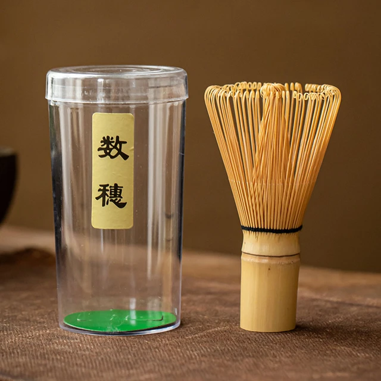
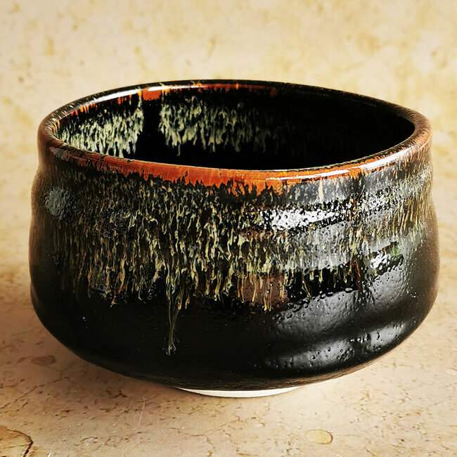

Nos produits phares

Produit 1
La brosse à matcha, ou "chasen" en japonais, est un outil en bambou pour fouetter le matcha. Fabriquée à la main, elle crée une mousse onctueuse lors de la préparation du thé. C'est un symbole de la tradition japonaise, combinant fonctionnalité et esthétique.

Produit 2
Le bol à matcha : un récipient rond en céramique pour préparer et servir le thé matcha, alliant fonctionnalité et esthétique.
Produit 3
Le bâton de thé matcha, ou "chashaku" en japonais, est un ustensile en bambou pour mesurer la poudre de matcha. Son design courbé permet un dosage précis, symbolisant l'élégance de la cérémonie du thé.